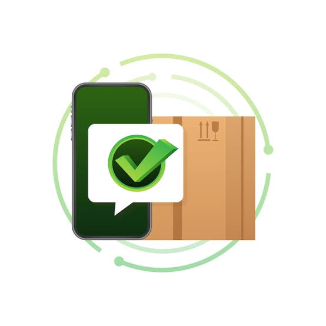

Restaurantes
Consultas productos, precios y disponibilidad, genera pedidos, hace seguimiento en tiempo real y centraliza el inventario.
Plataforma B2B para la industria de alimentos
Centraliza y automatiza pedidos, inventario, facturación y logística, reemplazando los procesos manuales por un flujo digital, trazable y en tiempo real.
Una plataforma que conecta digitalmente a los actores de la cadena de suministro de alimentos.
Consultas productos, precios y disponibilidad, genera pedidos, hace seguimiento en tiempo real y centraliza el inventario.

Publican su catálogo, reciben pedidos, los confirman y despachan con un flujo trazable de principio a fin.
Se integran a la logística y las rutas de entrega para coordinar el despacho y la llegada de los pedidos.
El ciclo de vida del pedido es completo, automatizado y visible para restaurante y proveedor en tiempo real.
El restaurante arma su pedido y lo envía al proveedor en segundos.

2El proveedor revisa y confirma la disponibilidad del pedido.
Los productos se alistan y empacan según el pedido confirmado.
El proveedor entrega el pedido al transportador asignado.
 5
5
Rastreas la entrega en tiempo real hasta la cocina.
 6
6
El restaurante recibe y cierra el ciclo del pedido.
Elige el nivel de servicio según crezca tu operación. Todos incluyen mantenimiento y soporte periódico.
Pensado para negocios que se inician en la digitalización: funcionalidades esenciales de la plataforma y una versión básica de Xupply IA.
Para operaciones en crecimiento que necesitan mayor control y análisis de su negocio, con la inteligencia artificial más integrada al flujo.
La solución completa para cadenas y operaciones grandes que aprovechan toda la potencia de Xupply IA en su gestión diaria.
El equipo detrás de Xupply.

DevOps · Repo, Git, CI/CD y despliegue

Frontend · Interfaz, estilos e interacción
Backend · Servidor, API, lógica y BD

Backend · Servidor, API, lógica y BD

PM · Canal con el cliente, QA y entregas
Solicita una demo o cuéntanos sobre tu operación y te acompañamos con la implementación.